Tudo que voce precisa saber para tirar sua ideia do papel
Rafael Henrique Santos Soares
www.rafaelhenrique.net
Agradecimentos
Ao IFB e à organização do III IFTechDay pela oportunidade, e aos presentes pelo prestígio.
Quem sou?


MVP - Minimum Viable Product (Mínimo produto viavel)
Versão do produto com um conjunto mínimo de características necessárias para que ele possa ser colocado de imediato no ar e submetido a testes que permitirão validá-lo e aprimorá-lo.
Ferramentas


GIT
GIT
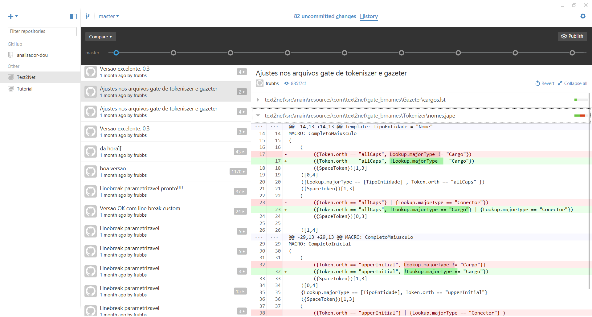GIT
git initgit add --allgit commit -m "correcao do bug" git pushMaven
Maven
mvn packageTomcat embedded
Tomcat embedded (Maven)
- Criar um pom.xml como o modelo abaixo
<project xmlns="http://maven.apache.org/POM/4.0.0" xmlns:xsi="http://www.w3.org/2001/XMLSchema-instance"
xsi:schemaLocation="http://maven.apache.org/POM/4.0.0 http://maven.apache.org/maven-v4_0_0.xsd">
<modelVersion>4.0.0</modelVersion>
<groupId>com.conselhos1</groupId>
<artifactId>conselhos</artifactId>
<version>1.0-SNAPSHOT</version>
<packaging>jar</packaging>
<name>Conselhos</name>
<url>http://maven.apache.org</url>
<properties>
<tomcat.version>7.0.57</tomcat.version>
</properties>
<dependencies>
<dependency>
<groupId>org.apache.tomcat.embed</groupId>
<artifactId>tomcat-embed-core</artifactId>
<version>${tomcat.version}</version>
</dependency>
<dependency>
<groupId>org.apache.tomcat.embed</groupId>
<artifactId>tomcat-embed-logging-juli</artifactId>
<version>${tomcat.version}</version>
</dependency>
<dependency>
<groupId>org.apache.tomcat.embed</groupId>
<artifactId>tomcat-embed-jasper</artifactId>
<version>${tomcat.version}</version>
</dependency>
<dependency>
<groupId>org.apache.tomcat</groupId>
<artifactId>tomcat-jasper</artifactId>
<version>${tomcat.version}</version>
</dependency>
<dependency>
<groupId>org.apache.tomcat</groupId>
<artifactId>tomcat-jasper-el</artifactId>
<version>${tomcat.version}</version>
</dependency>
<dependency>
<groupId>org.apache.tomcat</groupId>
<artifactId>tomcat-jsp-api</artifactId>
<version>${tomcat.version}</version>
</dependency>
</dependencies>
<build>
<finalName>conselhos</finalName>
<plugins>
<plugin>
<groupId>org.apache.maven.plugins</groupId>
<artifactId>maven-compiler-plugin</artifactId>
<version>2.3.2</version>
<inherited>true</inherited>
<configuration>
<source>1.8</source>
<target>1.8</target>
</configuration>
</plugin>
<plugin>
<groupId>org.codehaus.mojo</groupId>
<artifactId>appassembler-maven-plugin</artifactId>
<version>1.1.1</version>
<configuration>
<assembleDirectory>target</assembleDirectory>
<programs>
<program>
<mainClass>launch.Main</mainClass>
<name>webapp</name>
</program>
</programs>
</configuration>
<executions>
<execution>
<phase>package</phase>
<goals>
<goal>assemble</goal>
</goals>
</execution>
</executions>
</plugin>
</plugins>
</build>
</project>
Tomcat embedded - launch
- Criar uma pasta src/main/java/launch
- Criar uma classe chamada Main.java com o conteudo a seguir
package launch;
import java.io.File;
import org.apache.catalina.startup.Tomcat;
public class Main {
public static void main(String[] args) throws Exception {
String webappDirLocation = "src/main/webapp/";
Tomcat tomcat = new Tomcat();
String webPort = System.getenv("PORT");
if(webPort == null || webPort.isEmpty()) {
webPort = "8080";
}
tomcat.setPort(Integer.valueOf(webPort));
tomcat.addWebapp("/", new File(webappDirLocation).getAbsolutePath());
System.out.println("configuring app with basedir: " + new File("./" + webappDirLocation).getAbsolutePath());
tomcat.start();
tomcat.getServer().await();
}
}
Tomcat (Maven)
mvn package
target\bin\webapp.bat
Heroku
Heroku - configuração
Heroku
web: sh target/bin/webappgit init
git add --all
git commit -m "Primeira versao do sistema. Pronto para decolar!"heroku loginheroku create minhaAplicacaogit push heroku masterheroku logsHeroku (Maven)
<dependency>
<groupId>org.hibernate</groupId>
<artifactId>hibernate-entitymanager</artifactId>
<version>5.0.3.Final</version>
</dependency>
<dependency>
<groupId>org.hibernate</groupId>
<artifactId>hibernate-core</artifactId>
<version>5.0.3.Final</version>
</dependency>
<dependency>
<groupId>org.postgresql</groupId>
<artifactId>postgresql</artifactId>
<version>9.3-1100-jdbc41</version>
</dependency>
<dependency>
<groupId>javax.servlet</groupId>
<artifactId>jstl</artifactId>
<version>1.2</version>
</dependency>
PostgreSQL
http://www.postgresql.org/ https://www.heroku.com/postgres
- Sistema gerenciador de banco de dados relacional open-source
- Disponivel em nuvem; Acessível, portanto, de qualquer lugar.
Hibernate
Hibernate
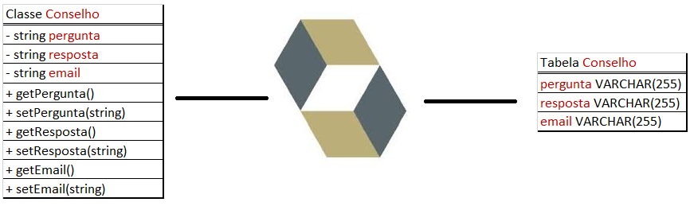
Conselho cons = new Conselho('Devo comer bacon?','Não, dá cancer.','rafaelhss@gmail.com');
Session session = HibernateUtil.getSessionFactory().openSession();
session.save(cons);
session.flush();
session.close();
Hibernate - Configuração
<dependency>
<groupId>org.hibernate</groupId>
<artifactId>hibernate-entitymanager</artifactId>
<version>5.0.3.Final</version>
</dependency>
<dependency>
<groupId>org.hibernate</groupId>
<artifactId>hibernate-core</artifactId>
<version>5.0.3.Final</version>
</dependency>
Hibernate - Configuração
<?xml version="1.0" encoding="UTF-8"?>
<!DOCTYPE hibernate-configuration PUBLIC "-//Hibernate/Hibernate Configuration DTD 3.0//EN" "http://hibernate.sourceforge.net/hibernate-configuration-3.0.dtd">
<hibernate-configuration>
<session-factory>
<property name="hibernate.dialect">org.hibernate.dialect.PostgreSQLDialect</property>
<property name="hibernate.connection.driver_class">org.postgresql.Driver</property>
<property name="hibernate.connection.url">jdbc:postgresql://localhost:5432/postgres</property>
<property name="hibernate.connection.username">rafael</property>
<property name="hibernate.connection.password">VRexJbyIxR-W8UR_YvQvdpc3c3</property>
<mapping class="bean.Conselho"/>
</session-factory>
</hibernate-configuration> PostgreSQL - Config
PostgreSQL - Config
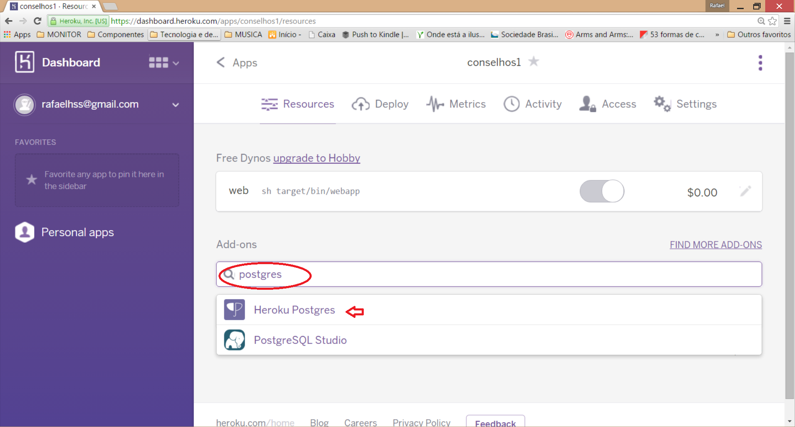
PostgreSQL - Config
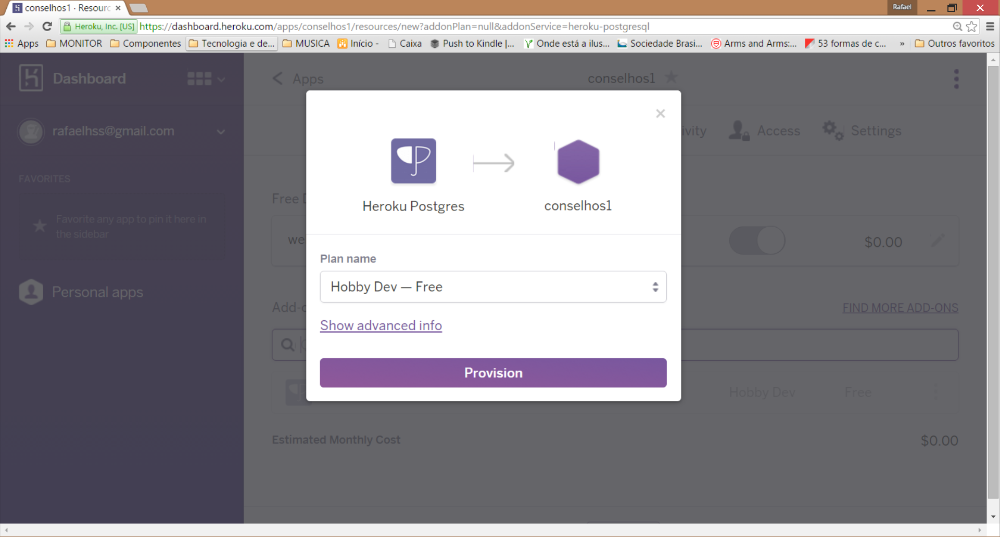
PostgreSQL - Config
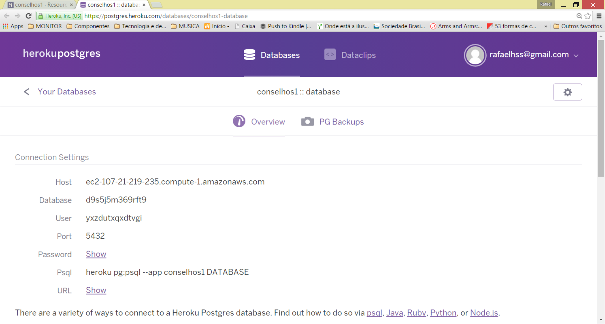
PostgreSQL - Admin
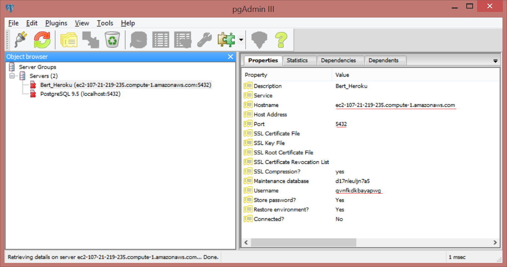
PostgreSQL - Config pgAdmin x Heroku
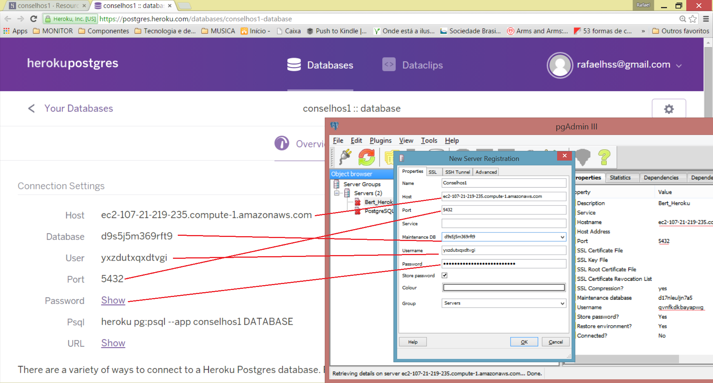
PostgreSQL - Config Hibernate
<property name="hibernate.dialect">org.hibernate.dialect.PostgreSQLDialect</property>
<property name="hibernate.connection.driver_class">org.postgresql.Driver</property>
<property name="hibernate.temp.use_jdbc_metadata_defaults">false</property>
<property name="hibernate.connection.url">jdbc:postgresql://ec2-107-21-219-235.compute-1.amazonaws.com:5432/d17nleuljn7a5?ssl=true&sslfactory=org.postgresql.ssl.NonValidatingFactory</property>
<property name="hibernate.connection.username">qvnfkdkbayapwg</property>
<property name="hibernate.connection.password">VRexJbyIxR-W8UR_YvQvdpc3c3</property>
Facebook4J
http://facebook4j.org/
Framework que encapsula a complexidade de integração com o Facebook
Permite, entre outras coisas, autenticação, recuperar informações do usuário, listar seus amigos, posts e fotos, fazer postagens em nome do usuário, etc...
Facebook4J
<dependency>
<groupId>org.facebook4j</groupId>
<artifactId>facebook4j-core</artifactId>
<version>[2.3,)</version>
</dependency>Facebook4J
Processo de autenticação OAuth no facebook
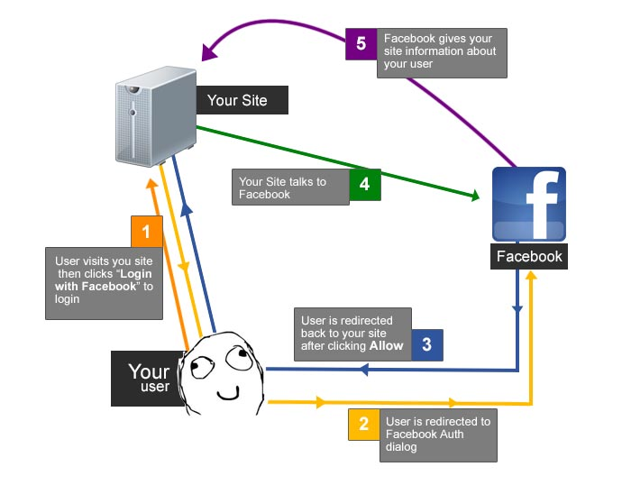Facebook4J
Facebook facebook = new FacebookFactory().getInstance();
facebook.setOAuthAppId("457959710995238", "69d6564f2573161");
facebook.setOAuthPermissions("public_profile, email, user_posts, publish_actions");
//salva o objeto Facebook para ser recuperado na callback
request.getSession().setAttribute("facebook", facebook);
response.sendRedirect(facebook.getOAuthAuthorizationURL(callbackURL.toString()));
Gerando APPID e AppSecret
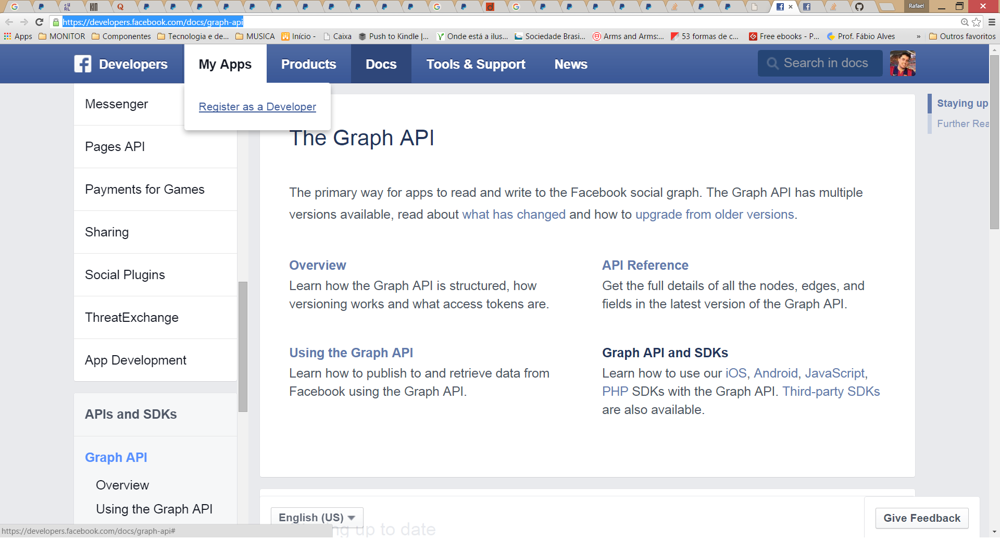Gerando APPID e AppSecret
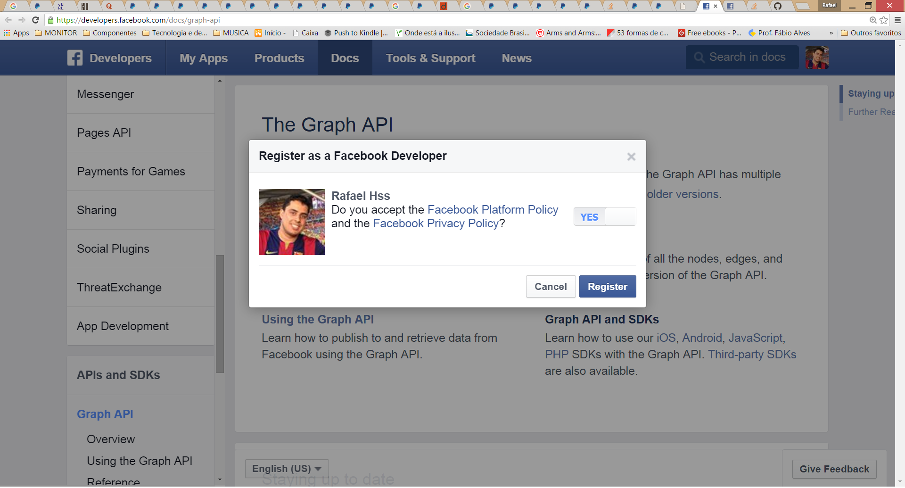Gerando APPID e AppSecret
Gerando APPID e AppSecret
Gerando APPID e AppSecret
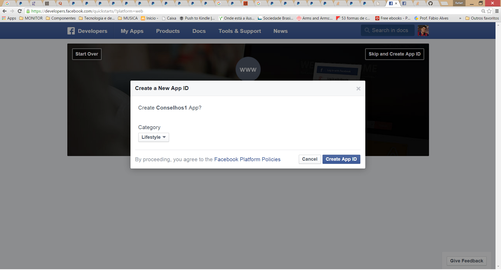Gerando APPID e AppSecret
Gerando APPID e AppSecret
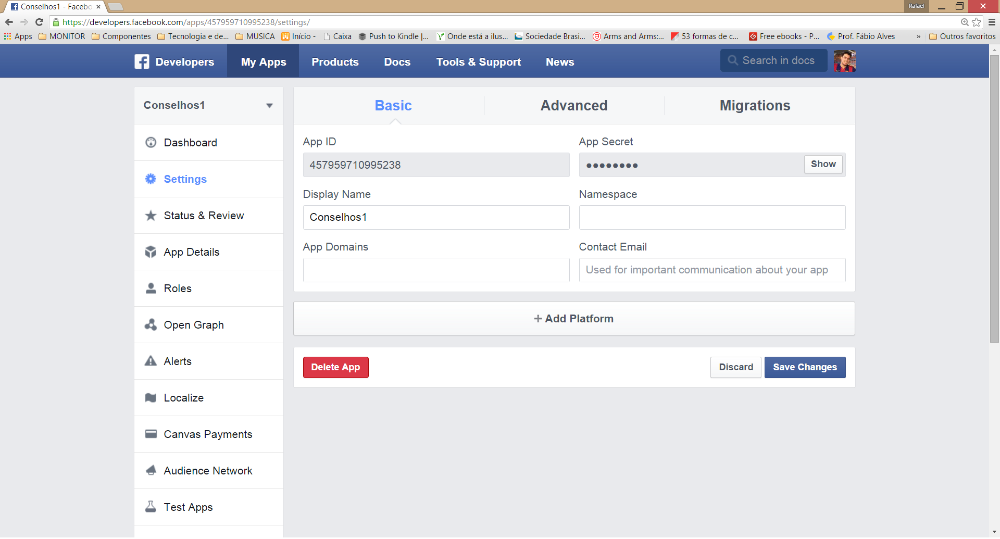Gerando APPID e AppSecret
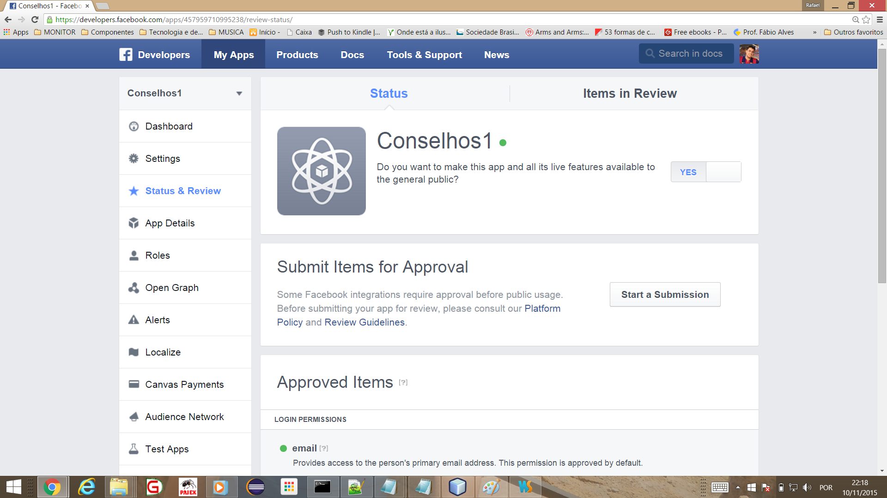Configurando a callback
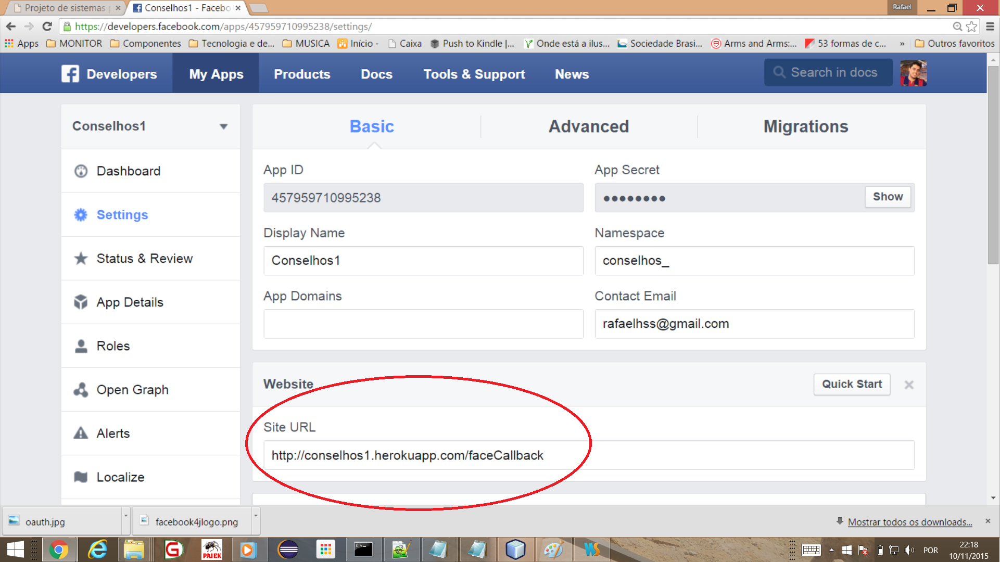Facebook4J
//recupera o objeto Facebook da sessao
Facebook facebook = (Facebook) request.getSession().getAttribute("facebook");
User user = facebook.getUser(facebook.getId(), new Reading().fields("email"));
out.println("seu email: " + user.getEmail());
Paypal
Paypal
Paypal
Paypal
Paypal
Paypal
Reflexões
Obrigado!
Essa apresentação está disponivel em www.rafaelhenrique.net/iftechday